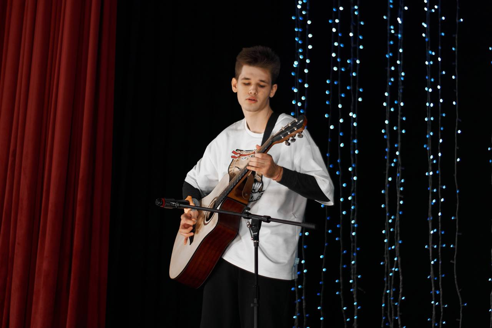

О себе
Привет! Меня зовут Антон, я начинающий музыкант, работающий в направлении инструментального рока, пост-рока и шугейза.
Проекты
Навыки
Hard Skills
- Игра на гитаре / ударных / клавишных
- Сведение / мастеринг / написание треков
- Написание пресс-релизов / питчинг
Soft Skills
- Коммуникабельность
- Адаптивность
- Открытость к критике